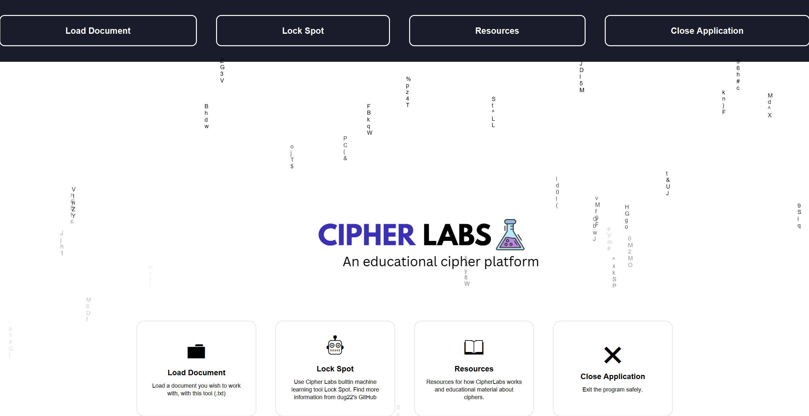
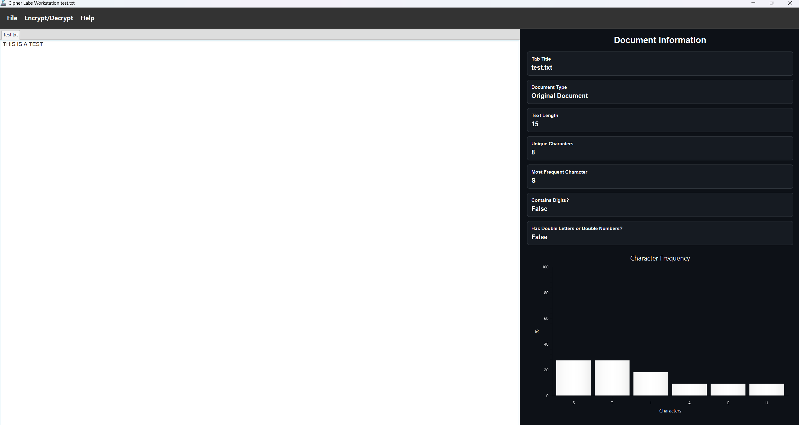
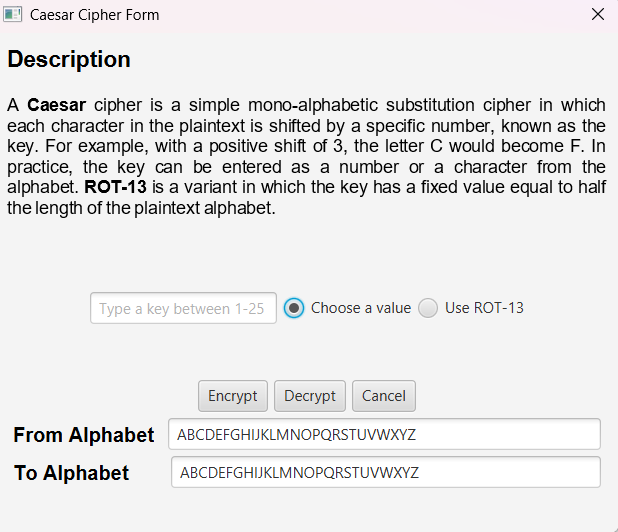
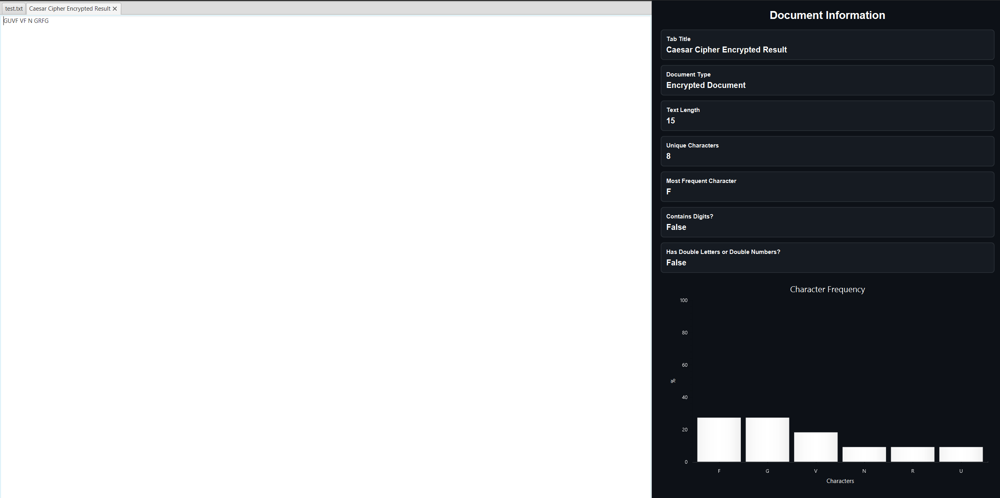

About Cipher Labs

Cipher Labs is an open-source educational cipher program designed to teach students and cybersecurity researchers the fundamentals of modern cryptology and cryptanalysis. Cipher Labs is a desktop application equipped with three main modules: a custom workstation module that allows users to experiment with classical and modern ciphers, and visualize how they work, a resources module that includes documentation on what Cipher Labs is and how it works, along with educational material on how the cipher algorithms that users can experiment with on the platform operate and work, plus Lock Spot’s module which was a separate command line tool, but has now been integrated into Cipher Labs. If you’re not familiar with what Lock Spot is, Lock Spot is a machine learning tool that allows users to input ciphertext and receive a conducted analysis of the cipher algorithm most likely used to encrypt it, along with the cipher category it most likely belongs to. Cipher Labs is still in beta, but more features are on the way, including additional cipher algorithms to explore, a cryptanalysis option to examine the security of specific ciphers, expanded Lock Spot model architectures for testing, and more educational resources on cryptography.
Cipher Labs Workstation Module
To access Cipher Labs workstation module, click on the "Load Document" label from either the top or bottom of the application. From there, Cipher Labs will ask you to choose a text document you wish to experiment with. Once you select the appropriate text document, you will come across a screen like this:

Cipher Labs workstation module comes equipped with a menu bar of options, a text area for the text you wish to experiment with, and side panel showcasing the information about the document you are working with.
Workstation Module's Menu Items and Their Functionalities
- File Tab Menu Items
- Home: will take you back to Cipher Lab's default home page.
- Lock Spot: will take you to Lock Spot's module.
- Save: will save the active tab you're working with
- Close: will safely close the application
- Encrypt/Decrypt Menu Tab Items
- Symmetric (Classic): will allow you to access classical symmetric ciphers to
experiment with, and
that includes:
- Caesar/ROT-13
- Vigenère
- Playfair
- Enigma
- Steganography Classic: will allow to you access classic steganographic ciphers to
experiment with, and that includes:
- Baconian or Bacon's Cipher
- Asymmetric: will allow you to access asymmetric cryptosystems to experiment with,
and
that includes:
- Textbook RSA
- Symmetric (Classic): will allow you to access classical symmetric ciphers to
experiment with, and
that includes:
- Help Tab Menu Items
- Resources will redirect you to Cipher Lab's resource page.
- GitHub will take you to Cipher Lab's GitHub page.
Note that anytime you access any encrypt/decrypt menu item, a form for the appropriate algorithm will appear, and allow you to encrypt or decrypt given text with the appropriate algorithm. So, say if I clicked on the Caesar/ROT-13 menu item, it will open a form like this.

After providing an appropriate number key between 1 and 25, and clicking either the "Encrypt" or "Decrypt" button, a new tabbed result will appear.

Make sure to be focused on the selected tab at the top, to appropriately encrypt or decrypt text.
In later updates, the Cipher Labs workstation module will contain newer features, such as more cipher algorithms to experiment with and cryptanalysis tools to exploit cipher vulnerabilities.
Cipher Labs Lock Spot Module
Lock Spot’s small models were trained on 50,000 unique records of ciphertext, which is equivalent to millions of characters of ciphertext. If you’re interested in the qualitative results of each model’s performance, please have a look at the figure below:
| Model Name | Accuracy in % of Identifying the Given Cipher Type | Accuracy in % of Identifying the Given Cipher Algorithm | Average Accuracy in % |
|---|---|---|---|
| Lock_Spot_Small_FFN_Model | 99.18 | 87.57 | 93.375 |
| Lock_Spot_Small_Logistic_Regression_Model | 95.76 | 73.77 | 84.765 |
Lock Spot's small random forest model has been excluded due to the large size of its parameter file. As a result, a logistic regression model was trained on its behalf and has been integrated into Cipher Labs. Small model architectures, were trained on identifying 15 initial classical cipher algorithms, which are:
- ADFGVX Cipher
- Affine Cipher
- AMSCO Cipher
- Atbash Cipher
- Autokey Cipher
- Baconian Cipher
- Beaufort Cipher
- Bifid Cipher
- Caesar Cipher
- Gronsfeld Cipher
- Playfair Cipher
- Polybius Cipher
- Porta Cipher
- Railfence Cipher
- Vigenère Cipher
Large model architectures are currently under development, with plans to train them on a baseline dataset of 160,000 or more unique ciphertext records to identify 29 classical cipher algorithms.
- ADFGVX Cipher
- Affine Cipher
- Alberti Cipher
- AMSCO Cipher
- Atbash Cipher
- Autokey Cipher
- Baconian Cipher
- Bazeries
- Beaufort Cipher
- Bifid Cipher
- Cadenus
- Caesar Cipher
- Columnar
- Grandpré Cipher
- Gronsfeld Cipher
- Hill Cipher
- Myszkowski Cipher
- Nihilist Substitution Cipher
- Nihilist Transposition Cipher
- Playfair Cipher
- Polybius Cipher
- Porta Cipher
- Railfence Cipher
- Route Cipher
- Running Key Cipher
- Trifid Cipher
- Trithemius Cipher
- Two Square Cipher
- Vigenère Cipher
Cipher Labs Resources Module
The Cipher Labs resource module features documentation on how Cipher Labs operates, along with comprehensive articles detailing the history and procedures of how every classical and modern cipher works. These articles serve as a foundational guide to help you learn and understand the core concepts about Cipher Labs and how every available cipher on our platform works. Use this archive extensively to help you learn and build up your knowledge in cryptography, while getting hands-on experience in the field.
Staying Updated
To stay updated, keep an eye on Cipher Labs GitHub releases page. New versions of Cipher Labs can be found there.